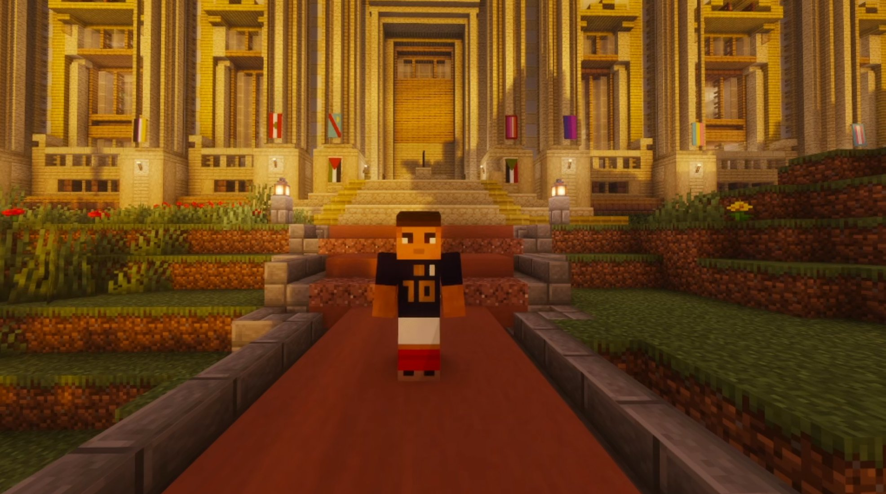

Mbappé se lance dans la course électorale : une candidature qui fait parler
Premier à officialiser sa candidature aux élections de Karminéa, Mbappé crée la surprise. Une interview exclusive est déjà prévue dans le Karmine Déchaîné — restez connectés.

C'est la nouvelle politique du moment à Karminéa. Avant même le discours de Sohalia à la banque, c'est Mbappé qui a créé la surprise en annonçant officiellement sa candidature aux élections. Une déclaration qui n'a pas manqué de faire réagir, tant le personnage est connu sur le territoire.
Une candidature annoncée avant l'heure
Mbappé a pris tout le monde de court en officialisant sa candidature en premier, s'imposant d'emblée comme le premier à se lancer dans la course électorale. Une manière de marquer les esprits dès le départ et de placer sa candidature sous les projecteurs avant même que la scène politique ne s'emballe. Les motivations précises de sa candidature, son programme et les axes qu'il défendra restent pour l'heure peu connus du grand public.
Une interview à venir
Le Karmine Déchaîné peut d'ores et déjà vous annoncer qu'une interview exclusive de Mbappé est à venir. L'occasion pour lui de se présenter aux citoyens de Karminéa, de dévoiler ses ambitions et de répondre aux questions que tout le monde se pose. Nous reviendrons vers vous très prochainement avec cette rencontre.
Une élection à surveiller de près
Karminéa entre donc dans une nouvelle période électorale, avec un candidat surprise qui attise déjà la curiosité. Qui est vraiment Mbappé ? Que veut-il pour la ville ? Quelles sont ses propositions ? Autant de questions auxquelles notre interview apportera bientôt des réponses. Le Karmine Déchaîné suivra cette campagne de près.
"En politique comme ailleurs, les surprises viennent souvent de ceux qu'on attendait le moins."
— La Rédaction